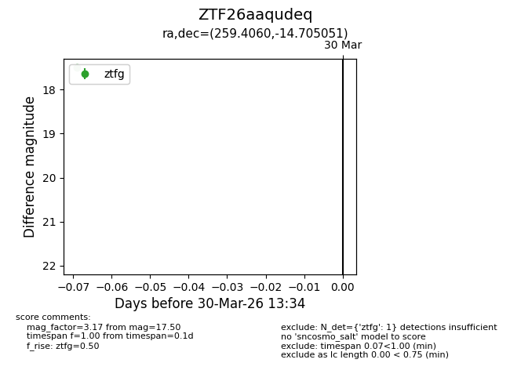
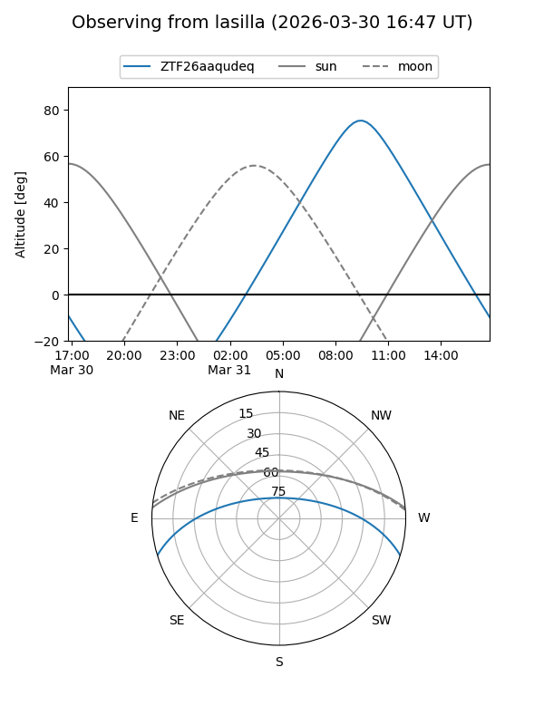
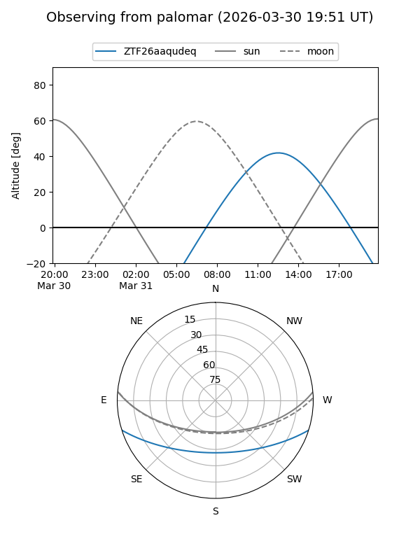

ZTF26aaqudeq
Target ZTF26aaqudeq at 2026-03-30 13:38
Aliases and brokers:
FINK: link
Lasair: link
ALeRCE: link
alt names
ZTF26aaqudeq (ztf,fink_ztf)
Coordinates:
equatorial (ra, dec) = 259.4060,-14.70505
equatorial (HMS+DMS) = 17:17:37.44,-14:42:18.18
galactic (l, b) = (8.5885,+13.11277)
Flags:
Photometry:
last ztfg=17.50
1 ztfg detections
Lightcurve

Visibility


Additional plots